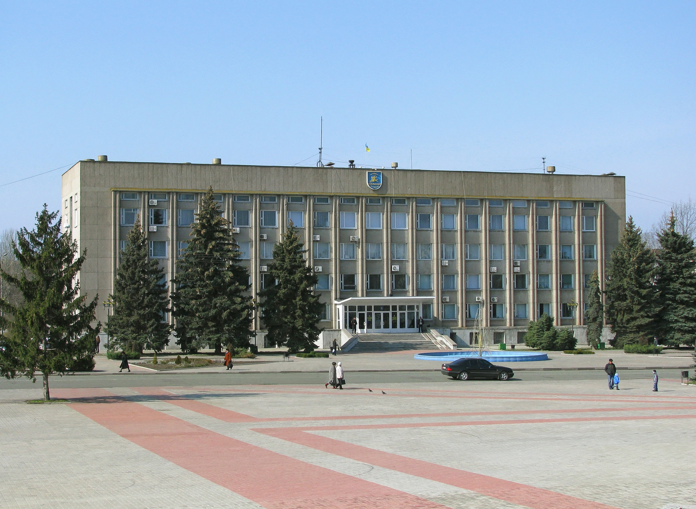

Немного про мой родной город

В Днепропетровской области, на берегу Каховского моря находится зеленый городок Никополь. Это исторический город, ведь в 17 веке здесь была Никитинская Сечь – сердце казацких земель и переправа через полноводную реку Днепр. Казаки называли это место раем, богатым плодородными землями, благоухающими долинами и водоемами. Сегодня на месте расположения Сечи на улице Никитинской гордо стоит монумент гетману Богдану Хмельницкому. В Никопольском краеведческом музее вы сможете осмотреть ценные коллекции археологических памятников, предметы быта и оружие украинских казаков, редкие старопечатные книги, украинские рушники. В нескольких километрах от города, в селе Копиловка, вы увидите могилу кошевого атамана Ивана Сирко.
После открытия парусного сезона в середине июне, кажется, что кто-то разорвал над водой белоснежное ожерелье, а его бусинки подбрасывают морские волны. Так выглядит один из самых зрелищных видов спорта – яхтинг. Ежегодно в городе проводятся регаты, заплывы, парады, соревнования. Это зрелище завораживает! Никополь известен также тем, что неподалеку в 1971 году на территории горнорудного комбината проводились раскопки скифского кургана Толстая Могила, где была найдена известная золота Пектораль – нагрудное украшение скифского царя, датированное 4 веком до нашей эры. Это одна из величайших находок мировой археологии и истории.